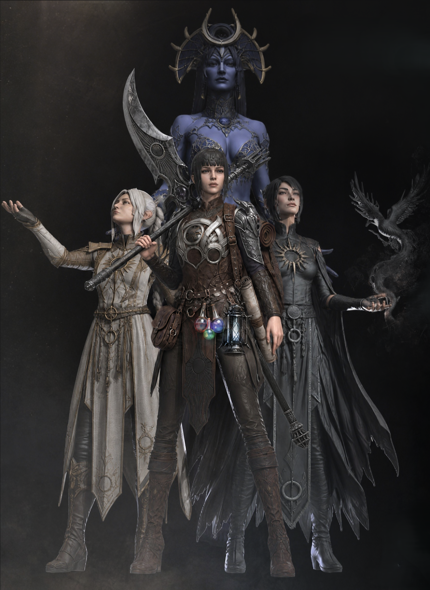
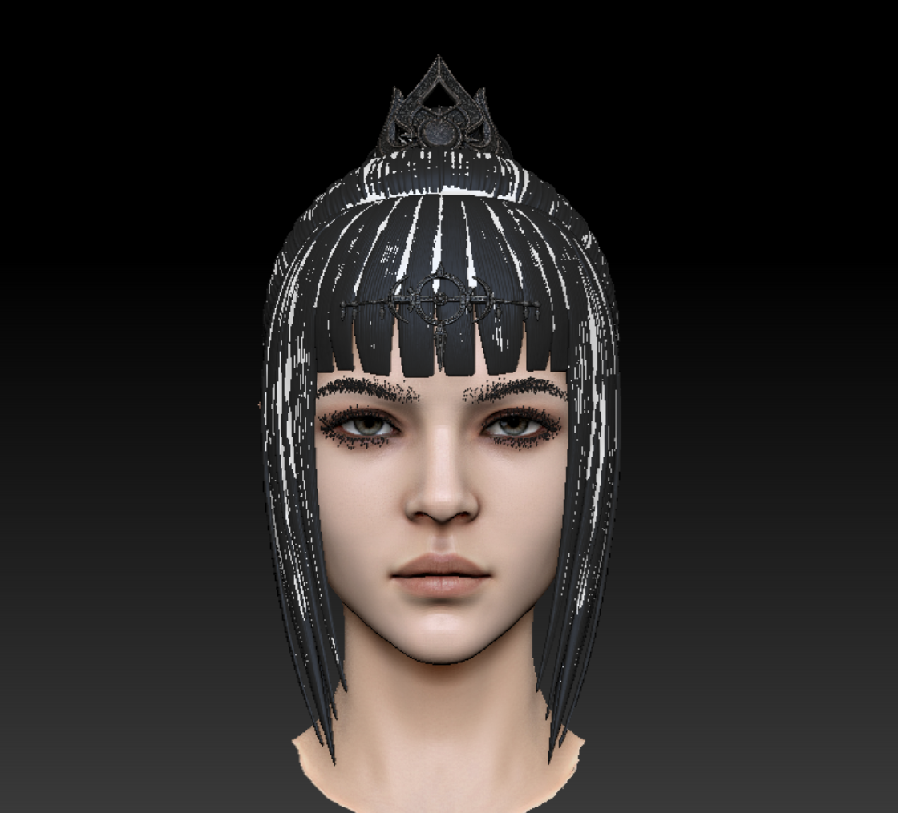
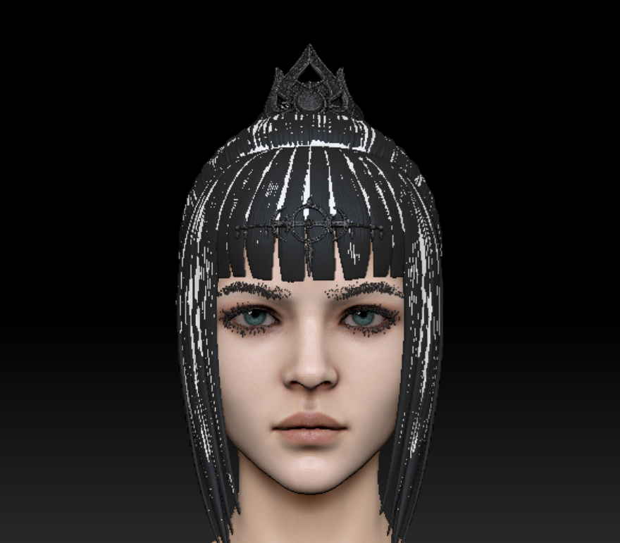
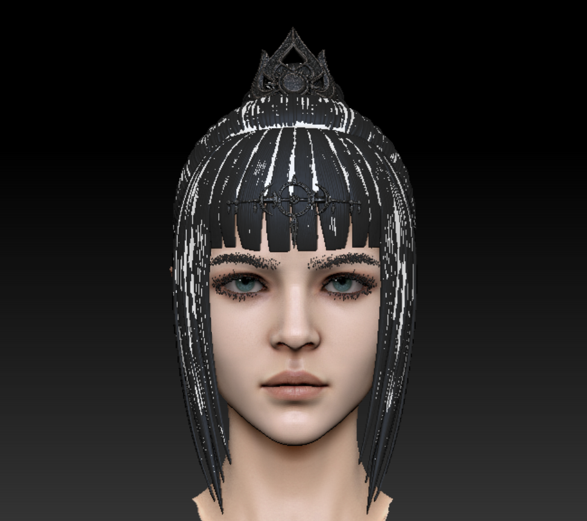
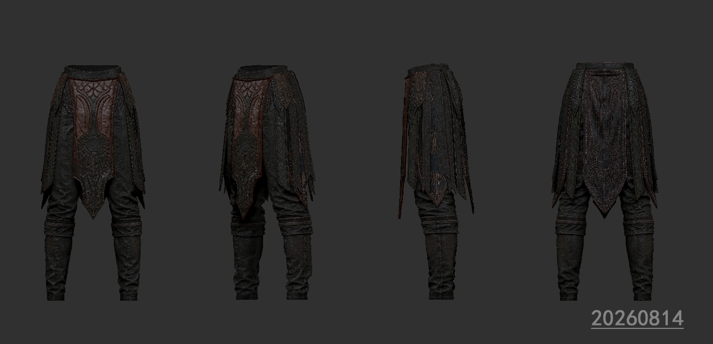
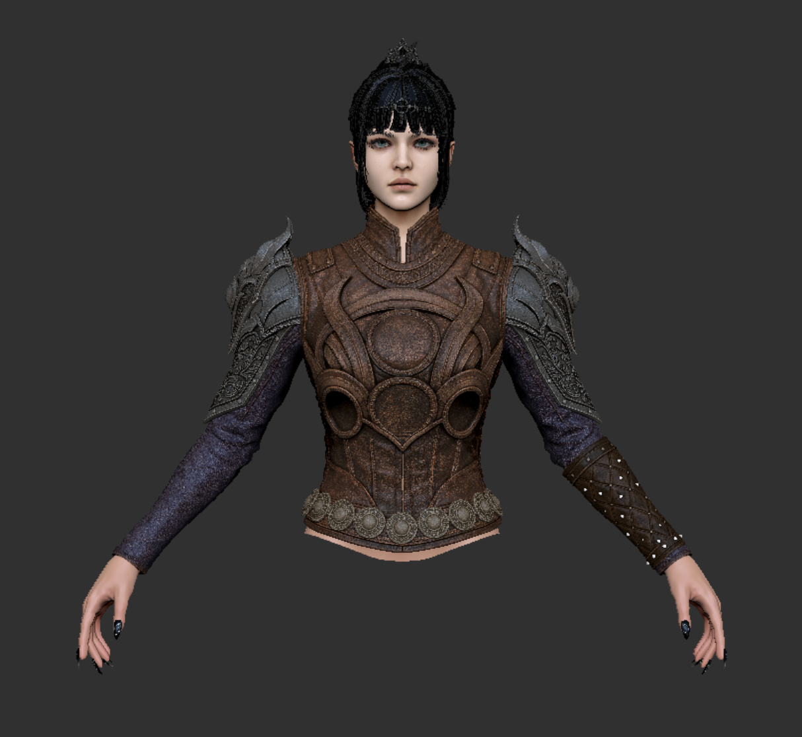

日期：2026年7月24日
项目：影心角色模型 — 个人创作
当前阶段：高模初版（High-Poly Draft v1）
一、制作动机
最近玩《博德之门3》很喜欢影心这个角色。
她身上有一种很矛盾的迷人感，半精灵血脉、暗夜女神的信徒，黑色幽默、以及她和信仰、记忆之间复杂的纠葛，让她成为整个游戏过程中我最想理解的人。
于是半夜从床上爬起来打开软件开始做影心的模型，想法总是在三更半夜的时候冒出来，一下子想了几个画面但是都是那种大场景构图，像是被莎尔束缚的掌中玩物，双重抉择下黑白影心走向不同的人生，前期作为莎尔信徒的影心被黑白影心反复拉扯。
二、当前进展
阶段：高模初版（High-Poly Draft v1）— 尚未精修

前期影心/白影心/黑影心/莎尔组合高模初版渲染图

前期影心加入装备/配饰/包袋等装修道具后的初版渲染图
这是第一版人物构图，因为考虑到拓扑和绑定，所以构图和姿势比较基础。——2026年7月24日

7月24日初版生成三视图（正/侧/背）
阶段：高模人工修改阶段（High-Poly Manual Refinement）— 正式开始
📅 2026年8月3日

ZBrush 高模人工修改阶段实机截图（2026年8月3日 早 08:38）
今天居然已经8月3日了，距离初版高模生成（7月24日）已经一周快两周了，今天早上才正式进入高模人工修改阶段。这段时间虽然没在改模型，但并不是停摆，这几天一直在搞提效工具、找参考图，把生产流程里反复消耗时间的环节自动化掉。
另一方面的现实原因是我的电脑配置没办法同时打开超大 ZBrush 文件和跑几个线程的东西，所以提效工具的开发和影心高模修改只能二选一，这段时间先做了工具。除此之外刚好这段时间深圳这边租的房子到期了，上周大部分时间都在搬家、寄快递、盘点剩下的预算、顺便帮房东带房客介绍房子...生活上的事占了不少精力。其实生活预算也没剩多少可自由支配的了，大三大四到毕业的这段时间，花了太多钱在两地长期租房、来回机票、酒店、换电脑配置买新设备上。杭州深圳两地当天往返的日子，刚下飞机就要坐地铁去学校/公司的日子，也算是在7月彻底结束了。
不过虽然手没在动模型，脑子里一直在想影心要改的部分，搬家、跑代码、寄快递、跟各种人沟通的间隙都会反复思考需要调整的地方。今天早上正式开工，先修几个小地方，下午再做其他事情。
阶段：高模第二次调整 — 脸型 / 贴图 / 五官细化
📅 2026年8月14日 凌晨 · 距8月3日第一次动手过了约11天
时隔10天左右第二次继续动影心的高模。生活节奏一直没完全拉回正轨，中间主要精力还是放在提效工具、桌面宠物、还有日常项目上，影心的事反而成了深夜挤时间才能碰的状态。今晚（确切说是凌晨1点）终于能坐下来继续改，这次主要做了这几件事：
脸型微调：整体给脸部轮廓、五官位置做了一点调整。
贴图换皮：贴图没有精修，只是整体换了一层更贴近原画气质的皮肤纹理，肤色和面部光影比之前更统一。
眉毛、睫毛、眼球补齐：之前头部一直是空眼眶、没睫毛没眉毛的阴暗状态，这版把眉毛睫毛加上，眼球也给了合适的虹膜和瞳孔，整体看起来一下就完整了，眼神从之前有点阴暗，变成偏温和的性格。

无眼球 / 有眉毛睫毛的"阴暗版"头部（个人偏爱阴暗的性格）

补齐眼球眉毛睫毛的"温和版"（瞳孔偏大，后续再调）

瞳孔缩小后的修正版，眼神相对收敛
另外趁热把下半身的裤衩子也改了一版。不过这版说实话自己都不太满意。整体感觉有点怪，尤其是前面那块垂布的颜色，怎么看怎么不舒服，大概之后还要再改好几轮。先把多视图放上来，作为第1版裤子的存档，后面继续迭代的时候可以对比。说实话恨不得一天有48小时都可以用来学习和打磨。

第1版裤装高模多视图（正面垂布颜色观感不佳，后续继续调整）
📝 近日心情：越做越觉得哪里都不对。脸型差点意思、贴图差点意思、衣服也差点意思，每看一眼都能挑出新的毛病来。有时候真的很希望身边能有个老师或者前辈狠狠骂我一顿，直接点破我看不到的问题——这一路能坚持下来，其实特别感谢所有愿意真心给我提意见的长辈们，那些真话比什么都珍贵。不过大概做角色就是这样吧，"永远不满意"说不定反而是能继续往前走的动力。
💭 关于"故事感"的思考
半夜制作的时候思考了一下，那种"哪里都奇怪"的感觉可能不只是脸或衣服本身的问题，而是缺了游戏角色的故事感。游戏里的角色身上一般都背着装备，大包小包的袋子、行囊、武器挂件，手上也可能拿着过场道具，甚至身边跟着一只宠物。配饰、装备、手持道具、宠物这些"叙事性配件"能交代角色去过哪、在做什么、是什么身份，直接带来沉浸感。但除了这些外在配件，更关键的其实是跟人物性格相符的动作神态，默认站姿、待机动画都是看出人物性格的途径。光是穿一身默认衣服摆着 T-pose/A-pose 站在那里，会有一种跟人物背景不太相符的感觉。所以接下来除了继续打磨脸和衣服本身，我也想给她加上一些装备/道具类配件，并考虑一个更贴合影心性格的待机姿态，让整体气质从"角色展示"往"游戏内状态"靠拢。
📝 2026-08-16 晚 · 第三次模型改动 · 上半身微调 · 22:54
今晚花了两个小时多小改一下影心的上半身。最近基本在整理项目，所以只动了头发，微调了脸型和手，衣服的金属部分暂时没动。算是一次小迭代，先存个档。

2026-08-16 22:54 第三次模型改动存档（头发重做、脸型与手微调）
💭 关于AI辅助的比喻
做的时候突然想到一个词——AI辅助商业项目的感觉有点像做试管婴儿。为了赶项目周期，应对决策者来来回回改的需求，靠AI快速出方案、快速迭代。第一次接触的时候确实很新鲜，觉得像是"未来科技"，但真的天天用下来就发现平平无奇，只是日常工具而已。不过最重要的是，AI辅助能让我们把精力集中在创作里自己真正喜欢的那一部分——雕刻、上色、塑形、造型……创作流程那么长，每个人总有自己最拿手也最投入的环节，剩下的杂活就让AI帮忙扛着，把时间留给自己想发挥的地方。
💭 关于脸部不对称
这次微调脸型的时候一直有意往不对称的方向调。之前看过一篇观点，说角色的脸不能做得完全对称——我一直觉得说的很有道理。真人的脸本来就不可能是百分百对称的，太对称的脸一眼看过去就很假，像玩偶或蜡像。从刚学做角色那几年开始就有意识地注意这一点，AI生成的模型尤其容易踩这个坑，因为算法天然喜欢对称分布，但出来的结果就是"不够像人"。脸部的一点不对称反而是真人的生命力所在——眉毛高低、嘴角弧度、眼尾走向、颧骨两侧的细微起伏，这些一点点的"不工整"才是让角色看起来有真实感的关键。
三、后续计划
完整制作流程
从高模到最终导入游戏，计划走完整个 3D 角色制作管线：
| 步骤 | 内容 | 说明 |
|---|---|---|
| 1 | 高模精修 | 细化面部、服装、毛发等所有细节，打磨到成品级 |
| 2 | 低模拓扑 | 基于高模制作低面数版本，控制面数适配游戏引擎 |
| 3 | UV 拆展 | 合理分 UV，注意接缝隐藏和空间利用率 |
| 4 | 贴图烘焙 | 烘焙法线（Normal）、AO、曲率（Curvature）等贴图 |
| 5 | 材质贴图 | 制作 Diffuse / Normal / ORM 等贴图，还原皮甲、金属、肤色的质感 |
| 6 | 绑骨蒙皮 | 骨骼绑定 + 权重刷涂，确保变形自然 |
| 7 | 导入游戏 | 封装为 BG3 Mod 格式，测试实际效果 |
额外造型方向
哥特洛丽塔（Gothic Lolita）风格 — 筹备中
影心是暗夜女神莎尔的信徒，本身就有一种暗黑、神秘、又被信仰束缚的矛盾气质，感觉哥特洛丽塔的蕾丝、束腰、暗色系质感非常贴合她。黑色与深紫的配色、繁复的细节、压抑又华丽的剪裁，和影心的角色内核几乎是天然契合的。计划在主线版本完成后，额外制作一套哥特洛丽塔造型的服装资产作为变体。